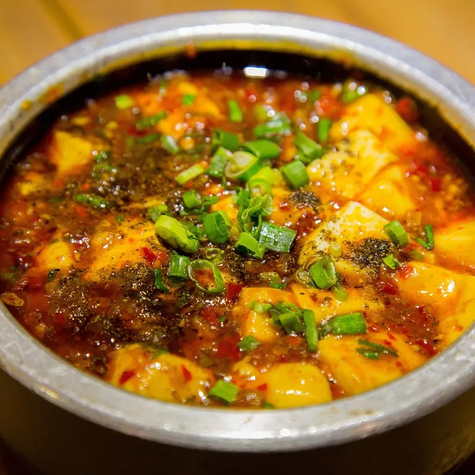

대만에는 1949년 이후 중국 각지에서 건너온 사람들이 문을 연 중식당이 많아서, 쓰촨(四川)·후난(湖南)·광둥(廣東)·장저(江浙) 등 지역별 요리를 한 도시 안에서 골라 먹을 수 있어요. 오래된 노포는 '小館'(작은 식당)이라는 이름을 단 곳이 많고, 큰 접시 요리를 여러 개 시켜 함께 나눠 먹는 게 기본이에요.
무엇이 특별할까요?
01
지역별로 맛이 달라요
쓰촨·후난 요리는 맵고 얼얼하고, 광둥 요리는 담백하고, 장저(상하이) 요리는 달고 짭조름한 편이에요. 메뉴판에서 지역 이름부터 확인해 보세요.
02
여럿이 나눠 먹기
요리가 한 접시씩 크게 나와서 2~4명이 3~4가지를 시켜 나눠 먹는 게 좋아요. 흰밥은 따로 주문하는 곳이 많아요.
03
매운 정도 조절
쓰촨 요리가 너무 맵다면 주문할 때 '小辣'(덜 맵게)나 '不辣'(안 맵게)라고 말하면 돼요.
이렇게 즐겨보세요
- ✓점심 시간 노포는 현지 직장인으로 붐비니 11시 30분 전에 가기
- ✓인원이 적으면 반 접시(小份)가 되는지 물어보기
- ✓마라·화자오가 들어간 요리는 메뉴 사진으로 맵기 미리 확인
- ✓현금만 받는 노포가 있으니 현금 챙기기
Real spots
전체 화면 지도로 보기 →
여행자들이 등록한 진짜 맛집
이 카테고리에 실제로 등록된 맛집을 지역별로 모아봤어요. 새로 등록되면 여기에도 바로 반영돼요. 핀을 눌러 추천 투표도 남길 수 있어요.
Join the map
지금 등록하기 →
나만의 맛집을 공유해주세요 🤫
여러분의 발견이 다른 여행자들에게 진짜 대만을 경험하게 해줍니다.